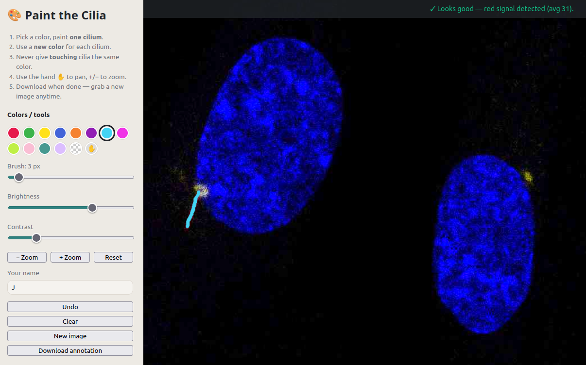
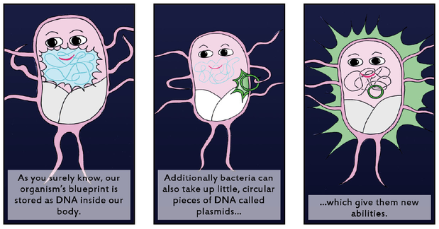

Science Communication & Outreach
Science belongs to society. So we communicate it broadly and publicly.

Paint a Cilium & Relax
Fancy a calm, meditative few minutes? Paint tiny cell antennae called cilia in real microscopy images.
"KlarText" Science Communication Prize
Jan received the KlarText Prize (Klaus Tschira Foundation), an award for excellent science communication in German, recognizing his general-audience article Empfangstörung explaining his PhD research.
Read the article (German) ↗
As a student on the iGEM Team Bonn (2013), Jan co-created a science comic introducing synthetic biology principles for a general audience.
Read the comic ↗
Jan's PhD, explained
A short film introducing Jan and his PhD research, produced for the KlarText Prize, a German award recognizing excellence in science communication. The film is in German, as it was made for the award ceremony.
Watch on YouTube ↗